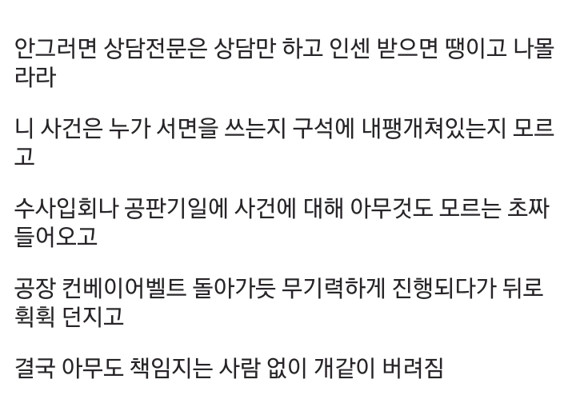
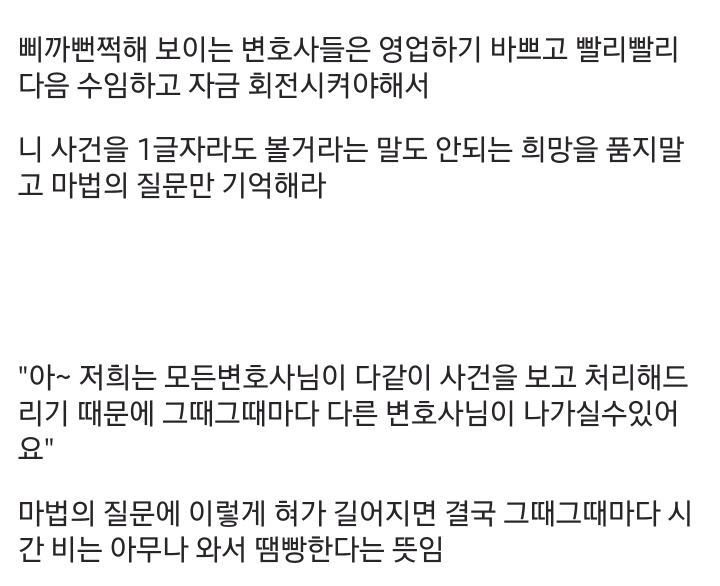
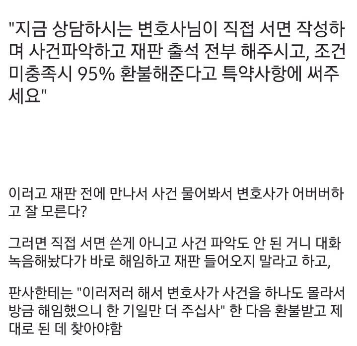
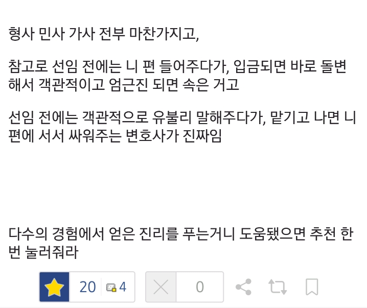

생각보다 많습니다. 0.1 정도 투자해서 도파민 충전이요? 좋죠.
스카이로스쿨 출신 10년 이상 경력인데, 님 말 개소리 맞음. Ai로 해온거 다 티나요. 그거 못잡을줄 아나 ㅋㅋ
요즘 하도 님같은 사람 많아져서 판사들이 알아서 커트하니까 좆되기 싫으면 변호사 잘 찾아봐라.
뭐 말해도 안들을거같긴 한데
수임료 꼴랑 220 가지고 변호사가 잘도 움직이겠다
ㅋㅋㅋㅋㅋㅋ 전관 딱히 효력 없서여.
로펌에서 전관을 비싼 돈 주고 데려오는 이유는 전관 자체가 광고판이라 그래여.
잘 모르는 사람들은 님처럼 "전관" 간판 하나 보고 오거든여. 전관 간판이 디게디게 맛집이라 글애여. 어차피 서면은 어쏘가 쓸 거고 전관은 상담 10분만 하고 다음 대기자 상담 갈 거에여.
아 근데 그 전관이 검찰전관 말고 경찰전관이면 또 얘기가 달라질 수 있긴 해여ㅋㅋㅋ 분위기부터가 달라 지더라구여ㅋㅋㅋ
그리고 제가 느끼기에 결국 법이란 건 결국 "꼬투리잡기"더라구여.
AI를 쓰면 된다구여? 그건 결국 "너의 주장"을 법조문에 맞게 정리하는거구여, 이 시발련좀 보래여. 하고 진짜 아주 쥐톨만한 흠까지 잡아서 꼬투리를 잡으려면 사람이 필요하더라구여.
얼마 받는지 알아요? 삼씁만원 받아요 삼씁만워~~언!
변호사가 다 해주기 원하면 돈 많이주고 좋은 변호사 선임하세요
정신감정으로 빼준다고 했어요!
정신감정 같은 소리쫌 하지마세요
형사사건에서만 된대
당해보면 진심 좆같음
변호사비용이 한두푼도 아닌데
상담땐 번지르르하게 믿고 맡겨달라고 하고서는 수임계약체결하니까 돌변해서 다른 사람이 나오고 맨날 지각하고 물어보는 것만 겨우 답변하고 응대해줌
유명한 말이 있음
비싸다고 좋은 변호사는 아니지만 좋은 변호사는 싸지 않다
나도 비슷한 사례가 있어서 공감이 감. 인수인계라도 제대로 하던가 전화상 연락하는 변호사랑 나랑 면담한 변호사가 서로 하는말이 달라 ㅅㅂ.
시밤 또 생각나서 열 받네;;
난 아버지 돌아가시기 전까지 동업한 회사에서 여러가지 사업 계약한 건 때문에서 소송 진행한적 있었는데,
나름 꽤 이름 있는 곳이고 상담 받을 때 담당이던 대표 변호사가 맘에 들어서 계약 했는데..
이후 실무 처리하는 변호사가 완전 초짜여서 골머리 썩힘;;;
소장, 참고 서류 작성된거 보내 줄 때마다.. 오타 지적, 잘못된 내용 지적 내가 확인하고 정정 요구함..
하도 심해서 사무소에서 행정업무 하는 그냥 신입직원이 대리하는건가? 의심할 정도..
실무 담당자 바꿔달라고 하려고 전화해서 얘기하다 보니 변호사가 맞긴 했음..
일단 사람은 괜찮아 보이고, 그쪽에서도 좀 더 연차 있는 변호사가 지원해주는 걸로 해서 계속 진행하고
소송도 잘 마무리 되긴 했는데.. 내가 많이 피곤했음..
영화나 드라마 처럼 변호사들이 의뢰인을 위해 고민하고 노력해 주는건 아니란걸 느꼈고,
변호사들도 일반 회사원들과 똑 같이 직장일 하는 사람들이구나 하고 생각하게 됨..
변호사도 기업형 법무법인이 많아서 갼 돈버는데ㅜ혈안인 애들이 태반이지....
안그런 변호사 만나는건 행운임 ㄹㅇ
나도 시발 내가 변호사랑 일을 하는건지 사무장이랑 일을 하는건지 모르겠더라
씨발놈
블로그나 유튜브로 변호사 검색해서 그 사람이 직접 담당하는지, 어쏘쓰는지 보면 됨
나도 지금 사기 당해서 변호사 선임해서 형사고소했는데
지금 구공판결정 됐고 담당검사는 내가 고소한 내용 거의 그대로 공소장에 작성했고
내가 선임한 변호사는 대표 변호사이고
상대편 변호사는 홈페이지에 경영파트너라고 되어 있는데
차이점이 있음?
대표변호사 = 로펌의 창업자거나, 대표 임원이라고 보면 됨. 당연히 로펌의 규모에 따라서 달라지긴 함. 2인 로펌에서도 둘다 대표 변호사라고 부르긴 하니까. 대신, 저 위에서 말한 '아무나 나오는 케이스'는 아니란 점에서 다행임.
경영 파트너 = 이게 '매니징 파트너'를 의미하는 단어가 맞다면, 이 사람도 사실 해당 로펌의 경영자급 즉, 최고 임원급인 변호사긴 함.
보통 전문직들이 모여서 만든 법인에서는 직원으로 합류해서 일하다가도 파트너로 승진할 기회가 주어짐. 파트너로 승진하면 보통 지분 넣고 회사 전체 수익을 같이 가져 감.
통상적으로는 이런데, 실제 상황은 사정에 따라 다 다르기 때문에
둘 다 재판에 직접 나온다면 개붕이와 사기범의 입장에서 둘다 윗 글과 같은 상황은 아닌 셈.
결국엔 증거싸움 이겠네
변호사
네안녕히가세요
복대리 진짜 암적인 거라고 생각함
네트워크만이라도 제발 피하십쇼 - 현직
참고로 어쏘 쓰는건 제대로 된 법무법인이면 사실 당연한거라 어쏘 쓰는지의 여부만으로 뭐라고 할 순 없음
담당어쏘-파트너의 조합이 자주 바뀌는지를 보아야 함
소비자 입장에서 이걸 알기는 사실 쉽지 않긴 한데
그래도 홈페이지에 웬만하면 경력들이 다 공개될테니
상담한 파트너가 있는 팀을 검색해서 어쏘들 경력을 보고
어쏘 공채 잔류율을 보면 대충 각이 나옴
네트워크가 먼가요 휴먼
- 추가 : 앞댓글들 보고 알았음 답안해줘도 ㄱㅊ아여
ㄹㅇ유익
그래서 연잔이한데 변호사비 아끼지말라고 하도형이 말했구나
아직 뭔지 잘 모르겠는데 송사에 휘말리면 생각나서 찾아보겠구만
가끔 사무장이 일 더 잘하는 데도 있더라
변리사도 마찬가지
저런 꿀팁을 몰라도되는 인생이 제일좋긴한데
인생이 꼭 무탈하지만은..
그래서 지인찬스가 좋은 점도 있는거 같음... 소개받아 가면 저러진 못함
변호사팁…ㅇㄷ…

나도 소송 진행하면서 변호사한테 진짜 많이 혼났다. 왜 자꾸 감정표현하냐고 객관적인 사실만 가지고 이야기해야한다 하고, 나는 상대방이 얼마나 나쁜 사람인지 어필하기위해 이사람이 이런목적으로, 저런 목적으로 이랬다고 하니깐 그 사람이 잘못했건 안했건 재판하고 상관없는 그런 사족은 붙이지 말라하고 재판 못이길수도있고 마냥 유리하지 않다고 하면서 객관적 사실 아니면 말도 못꺼내게 하고, 내가 의뢰인인데 벽엄청 느꼈다. 수수료도 평균 시세보다 2배 + 성공보수까지 있는건데 그 서러운마음 승소하고나서 고마운 마음으로 바꼈음. 기분 나빠도 팩폭해주는 변호사가 최고다.

몇몇 기업식 로펌들이 특히 저게 심하니
법원근처 터줏대감같은 법무사사무실가서 상담비내고 문의하고 근처 책임감있는 변호사추천 받는게 좋아
...? 누가 발끈해?ㅋㅋㅋ
혹시 출신 정신병원이...?